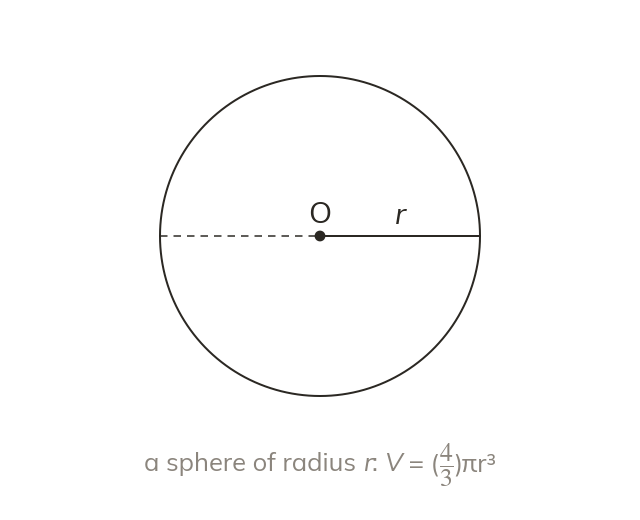

Volume cubes the radius
A sphere's volume cubes its radius. The radius is cubed before the 43 and π multiply it.
A sphere's volume depends on the cube of its radius, because volume is three-dimensional. The radius is cubed first, and only then multiplied by 43 and by π.